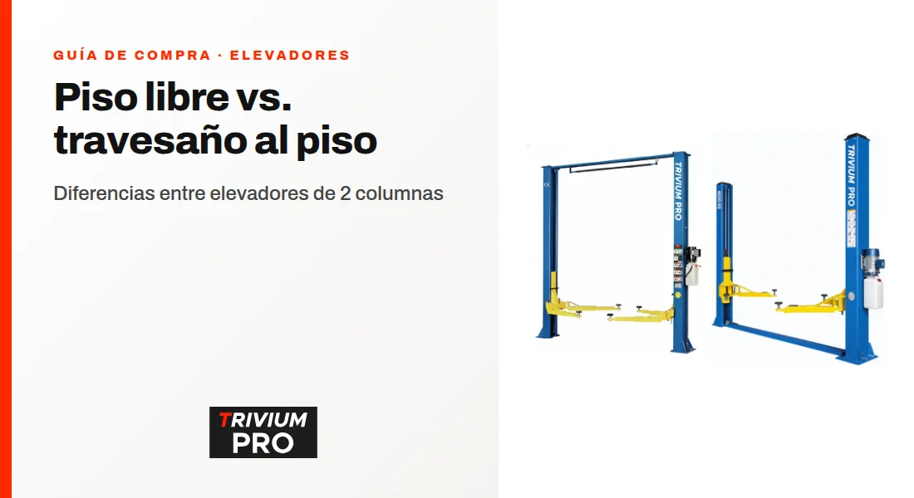

Los elevadores de 2 columnas son herramientas fundamentales en talleres mecánicos y concesionarios de autos. Dentro de esta categoría, existen dos tipos principales: los de piso libre y los de travesaño al piso. Ambos modelos tienen sus propias ventajas y desventajas, lo que los hace ideales para diferentes necesidades. En este artículo analizaremos las principales diferencias para ayudarte a elegir el mejor para tu negocio.
Elevadores de piso libre
Características:
- Diseño sin un travesaño en la parte inferior, lo que deja el piso completamente despejado.
- Incluyen un travesaño superior que conecta las dos columnas.
- Los cables y mangueras hidráulicas están colocados en la parte superior del elevador.
Ventajas:
- Mayor comodidad para el operario: El piso libre permite que el usuario trabaje sin obstáculos al mover herramientas o carritos debajo del vehículo.
- Ideal para talleres con espacio reducido: Este diseño facilita el desplazamiento en áreas de trabajo estrechas.
- Estética y organización: Al no haber travesaño inferior, el taller luce más ordenado.
Desventajas:
- Altura mínima requerida: Necesitan techos altos, ya que el travesaño superior requiere espacio adicional.
- Costo: Generalmente, los elevadores de piso libre suelen ser más caros debido a la tecnología involucrada en el sistema superior.
Elevadores de travesaño al piso
Características:
- Diseño con un travesaño inferior que conecta las dos columnas.
- Los cables y mangueras hidráulicas se encuentran dentro del travesaño al nivel del suelo.
Ventajas:
- Altura flexible: No requieren techos altos, lo que los hace ideales para talleres con espacio vertical limitado.
- Estabilidad: El travesaño inferior agrega robustez al sistema, especialmente útil para soportar vehículos más pesados.
- Costo accesible: Generalmente son más económicos que los modelos de piso libre, lo que los hace atractivos para talleres que buscan funcionalidad a un precio menor.
Desventajas:
- Obstáculos en el piso: El travesaño puede dificultar el movimiento de herramientas, carros de transporte o elevadores adicionales debajo del vehículo.
- Menos espacio de trabajo: Aunque eficiente, puede ser un inconveniente para ciertos tipos de reparaciones que requieran acceso completo al piso.
Comparación general
| Característica | Piso libre | Travesaño al piso |
|---|---|---|
| Requerimientos de altura | Altura del techo alta | Altura del techo baja |
| Espacio en el suelo | Despejado | Obstaculizado |
| Costo | Más alto | Más accesible |
| Facilidad de uso | Más cómodo para maniobras | Ligeramente limitado |
| Capacidad de carga | Similar en ambos, dependiendo del modelo | Similar en ambos, dependiendo del modelo |
Conclusión
La elección entre un elevador de 2 columnas de piso libre y uno de travesaño al piso dependerá de las necesidades específicas de tu taller. Si cuentas con techos altos y buscas comodidad y eficiencia, el modelo de piso libre es una excelente opción. Por otro lado, si tu taller tiene un presupuesto limitado o techos bajos, un modelo de travesaño al piso ofrecerá una solución práctica y funcional.
En ambos casos, asegúrate de adquirir un modelo de calidad que garantice seguridad y durabilidad a largo plazo. La inversión en un buen elevador siempre se traduce en mayor productividad y satisfacción de tus clientes.